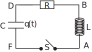

In the circuit shown in Figure 19, the switch
is closed at
with a capacitor charge
constant and
.
Figure 19

Show that
where
and
Laplace transform properties required
The following properties are needed to solve this problem.
(P1)
(P2)
(P3)
with
(P4)
with
(P5)
(P6)
STEP 1
Establish the differential equation for
using, for example, Kirchhoff’s law.
When the switch
is closed, the inductance
, capacitance
and resistance
give rise to a.c. voltages related by
So since
and
we have
(1)
STEP 2
Write the Laplace transform of the differential equation substituting for the initial
conditions:
Since the Laplace transform is linear, the transform of differential Equation (1) is
(2)
We deal with each derivative term in turn: Using property (P3),
So, using the initial conditions
and
(3)
By means of property (2)
(4)
STEP 3
Solve for the function
by substituting from (3) and (4) into Equation (2):
(5)
Using the definitions
and
enables the denominator in Equation (5) to be expressed as the sum of two squares,
Consequently, with the new expression for the denominator, Equation (5) becomes
(6)
STEP 4
Use the inverse Laplace transform to obtain
:
The inverse Laplace transform is used to find
Taking the inverse Laplace transform of Equation (6) and using the linearity properties
Using property (P6) this can be written as
Using the linearity of the Laplace transform again
(7)
Using properties (P1) and (P5)
(8)
Similarly,
(9)
and
(10)
Substituting (8), (9) and (10) in (7) gives
(11)
STEP 5
Finally, show that for
the solution is
where
and
Substituting
in (11) gives